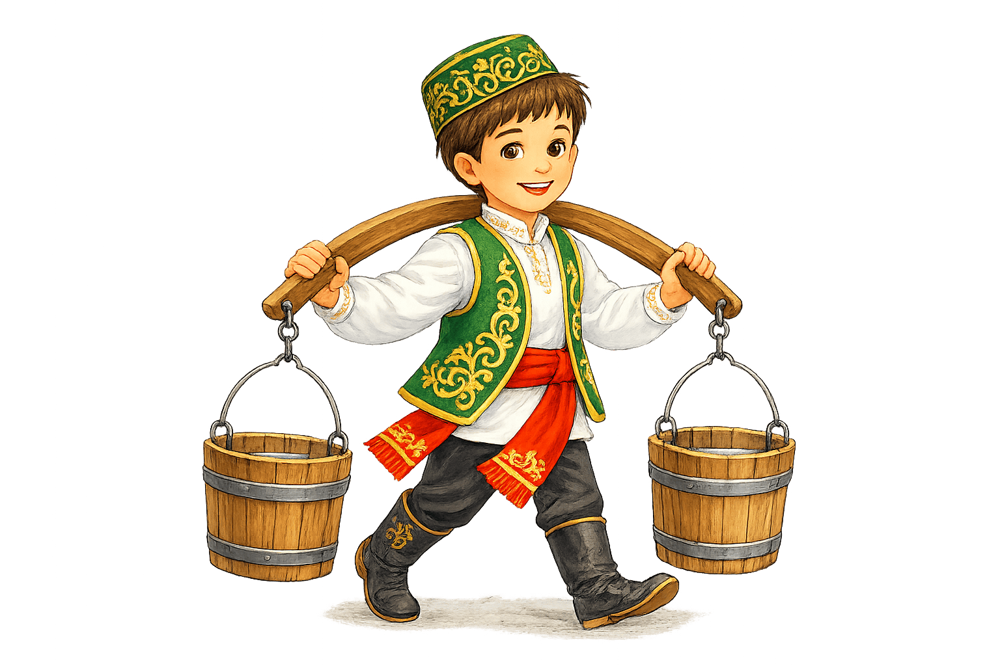
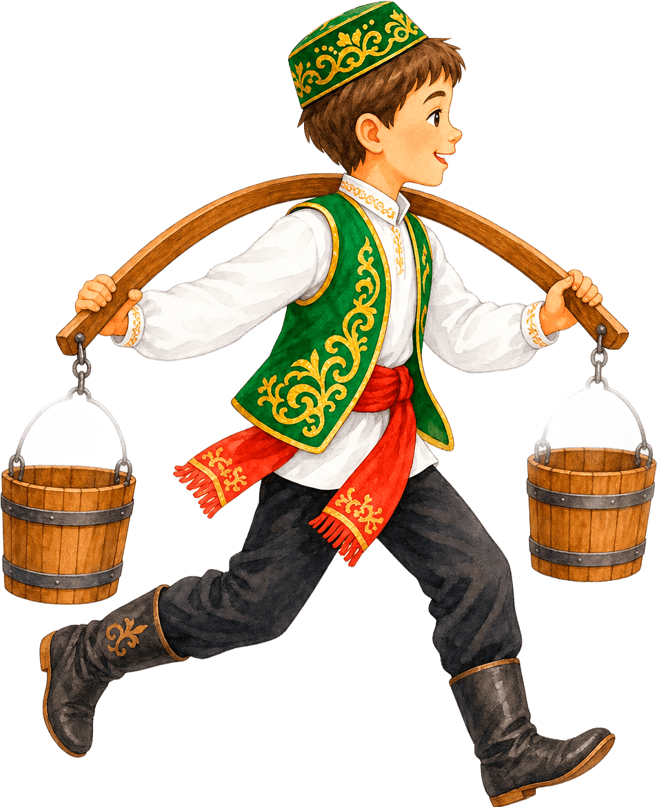

Игра народов Поволжья
Сабантуй
Беги по праздничной дороге, перепрыгивай препятствия и донеси коромысло до финиша.
Время
45
Скорость
1.0x

Прыжок: пробел, стрелка вверх, клик или тап по игровому полю.
Результат
Игра завершена
Попробуй ещё раз и добеги до финиша.
Сабантуй — народный праздник татар и башкир, который проводят после окончания весенних полевых работ. На нём устраивают игры, состязания в ловкости, силе и быстроте.
Как играть
На празднике Сабантуй участники соревновались в ловкости, силе и быстроте. В этой игре тебе предстоит пробежать полосу препятствий и успешно добраться до финиша.
- Нажми «Начать игру».
- Персонаж бежит вперёд автоматически.
- Чтобы перепрыгнуть препятствие, нажимай Пробел, клавишу ↑, кликай мышью по игровому полю или касайся экрана на телефоне.
- Перепрыгивай брёвна, камни, вёдра и другие препятствия.
- Если столкнёшься с препятствием — игра закончится.
- Продержись до окончания времени и успешно заверши забег.
Будь внимателен, рассчитывай момент прыжка и помоги участнику Сабантуя добежать до финиша!